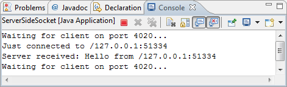
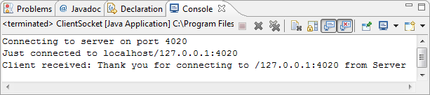
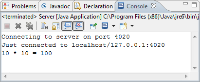
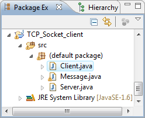
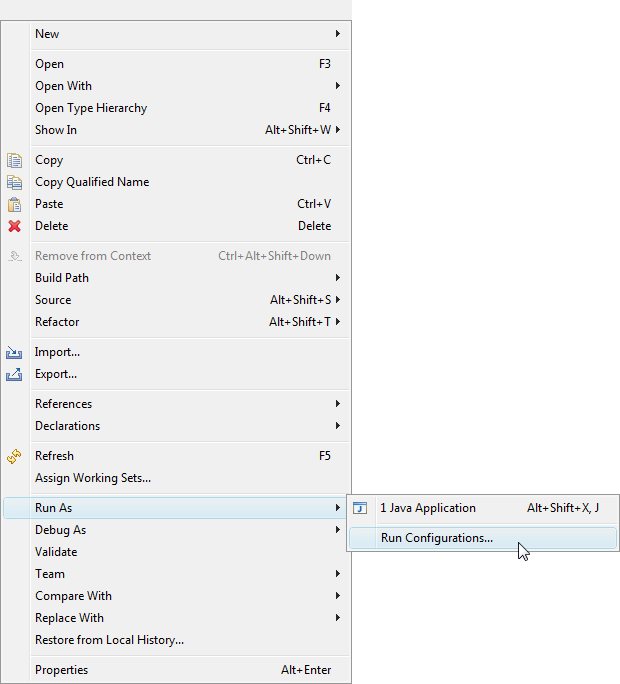
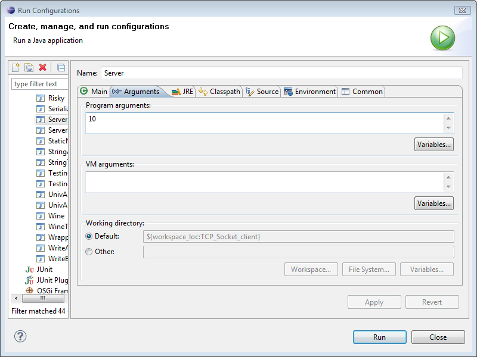

TCP Sockets Server/Client - 2017

In this chapter, we are working with programs which run on different machines. Because a program on one machine cannot directly reference object in a program running on other machines, we need to from a communication network with help from the OS. We call it network channel.
When two threads want to exchange message over the channel, each thread create an endpoint object that represents its end of the network channel. The OS manages the hardware and software that is used to transport messages across the channel (between the endpoints). What do we call those endpoint objects? They are sockets.
- The client thread's socket specifies a local I/O port for sending messages. The client's socket should specify the address of the destination machine as well as the port number that is expected to be bound to the server thread's socket.
- The server's socket also should specify a local I/O port to receive messages. Messages can be received from any client, as far as the client machine knows the server's address and the port number which are bound to the server's socket.
- The client issues a request to the server to make a connection between the two sockets. Once the server accepts the connection request, messages can be passed in both directions across the channel.
The java.net class library provides classes Socket and ServerSocket for message passing for TCP/IP. Here, we'll use a very simple client and server example to show the use of TCP socket in Java.
- Class Socket
// Client Side import java.io.*; import java.net.*; public class ClientSocket { public void run() { try { int serverPort = 4020; InetAddress host = InetAddress.getByName("localhost"); System.out.println("Connecting to server on port " + serverPort); Socket socket = new Socket(host,serverPort); //Socket socket = new Socket("127.0.0.1", serverPort); System.out.println("Just connected to " + socket.getRemoteSocketAddress()); PrintWriter toServer = new PrintWriter(socket.getOutputStream(),true); BufferedReader fromServer = new BufferedReader( new InputStreamReader(socket.getInputStream())); toServer.println("Hello from " + socket.getLocalSocketAddress()); String line = fromServer.readLine(); System.out.println("Client received: " + line + " from Server"); toServer.close(); fromServer.close(); socket.close(); } catch(UnknownHostException ex) { ex.printStackTrace(); } catch(IOException e){ e.printStackTrace(); } } public static void main(String[] args) { ClientSocket client = new ClientSocket(); client.run(); } }The client assumes that the server is listening for connection request on port serverPort via TCP.
int serverPort = 4020; InetAddress host = InetAddress.getByName("localhost"); Socket socket = new Socket(host,serverPort);The Socket constructor throws an IOException if it cannot make a connection.
catch(IOException e){ e.printStackTrace(); }When the client's request is accepted, the client creates an input stream to receive data from its socket and an output stream to send data to the socket at the server's end of the channel. To the programmer, sending and receiving messages using sockets appears just like reading and writing data from files.PrintWriter toServer = new PrintWriter(socket.getOutputStream(),true); BufferedReader fromServer = new BufferedReader( new InputStreamReader(socket.getInputStream())); toServer.println("Hello from " + socket.getLocalSocketAddress()); String line = fromServer.readLine(); System.out.println("Client received: " + line + " from Server"); - Class Server Socket
The server begins by creating a ServerSocket:int serverPort = 4020; ServerSocket serverSocket = new ServerSocket(serverPort);
Here is the server side code:// Server Side import java.net.*; import java.io.*; public class ServerSideSocket { public void run() { try { int serverPort = 4020; ServerSocket serverSocket = new ServerSocket(serverPort); serverSocket.setSoTimeout(10000); while(true) { System.out.println("Waiting for client on port " + serverSocket.getLocalPort() + "..."); Socket server = serverSocket.accept(); System.out.println("Just connected to " + server.getRemoteSocketAddress()); PrintWriter toClient = new PrintWriter(server.getOutputStream(),true); BufferedReader fromClient = new BufferedReader( new InputStreamReader(server.getInputStream())); String line = fromClient.readLine(); System.out.println("Server received: " + line); toClient.println("Thank you for connecting to " + server.getLocalSocketAddress() + "\nGoodbye!"); } } catch(UnknownHostException ex) { ex.printStackTrace(); } catch(IOException e){ e.printStackTrace(); } } public static void main(String[] args) { ServerSideSocket srv = new ServerSideSocket(); srv.run(); } }Then the timeout expires, a java.net.SocketTimeoutException is raised and the Socket is still valid.
After creating ServerSocket, the server calls accept() method of the ServerSocket in order to listen for incoming connection requests from clients.
Socket server = serverSocket.accept();
Method accept() wait until a client requests a connection; then it returns a Socket that connects the client to the server. The server then gets input and output streams from the Socket and uses them to communicate with the client.
When the interaction ends, the client, server, or both, close the connection, and the server waits for a connection request from another client.
Here are the communications between server and client.


The java.net.Socket class represents the socket that both the client and server use to communicate with each other. The client obtains a Socket object by instantiating one, whereas the server obtains a Socket object from the return value of the accept() method.
The Socket class has five constructors that a client uses to connect to a server:
- public Socket(String host, int port) throws UnknownHostException, IOException.
This method attempts to connect to the specified server at the specified port. If this constructor does not throw an exception, the connection is successful and the client is connected to the server. - public Socket(InetAddress host, int port) throws IOException.
This method is identical to the previous constructor, except that the host is denoted by an InetAddress object. - public Socket(InetAddress host, int port, InetAddress localAddress, int localPort) throws IOException.
This method is identical to the previous constructor, except that the host is denoted by an InetAddress object instead of a String. - public Socket(String host, int port, InetAddress localAddress, int localPort) throws IOException.
Connects to the specified host and port, creating a socket on the local host at the specified address and port. - public Socket()
Creates an unconnected socket. Use the connect() method to connect this socket to a server.
When the Socket constructor returns, it does not simply instantiate a Socket object but it actually attempts to connect to the specified server and port.
These methods can be invoked by both the client and server since both the client and server have a Socket object.
- public void connect(SocketAddress host, int timeout) throws IOException
This method connects the socket to the specified host. This method is needed only when you instantiated the Socket using the no-argument constructor. - public int getPort()
Returns the port the socket is bound to on the remote machine. - public InetAddress getInetAddress()
This method returns the address of the other computer that this socket is connected to. - public int getLocalPort()
Returns the port the socket is bound to on the local machine. - public SocketAddress getRemoteSocketAddress()
Returns the address of the remote socket. - public InputStream getInputStream() throws IOException
Returns the input stream of the socket. The input stream is connected to the output stream of the remote socket. - public OutputStream getOutputStream() throws IOException
Returns the output stream of the socket. The output stream is connected to the input stream of the remote socket. - public void close() throws IOException
Closes the socket, which makes this Socket object no longer capable of connecting again to any server.
The java.net.ServerSocket class is used by server applications to obtain a port and listen for client requests.
The ServerSocket class has four constructors:
- public ServerSocket(int port) throws IOException.
Attempts to create a server socket bound to the specified port. An exception occurs if the port is already bound by another application. - public ServerSocket(int port, int backlog) throws IOException.
Similar to the previous constructor, the backlog parameter specifies how many incoming clients to store in a wait queue. - public ServerSocket(int port, int backlog, InetAddress address) throws IOException.
Similar to the previous constructor, the InetAddress parameter specifies the local IP address to bind to. The InetAddress is used for servers that may have multiple IP addresses, allowing the server to specify which of its IP addresses to accept client requests on. - public ServerSocket() throws IOException.
Creates an unbound server socket. When using this constructor, use the bind() method when you are ready to bind the server socket.
If the ServerSocket constructor does not throw an exception, it means that your application has successfully bound to the specified port and is ready for client requests.
Here are some of the common methods of the ServerSocket class:
- public int getLocalPort()
Returns the port that the server socket is listening on. This method is useful if you passed in 0 as the port number in a constructor and let the server find a port for you. - public Socket accept() throws IOException
Waits for an incoming client. This method blocks until either a client connects to the server on the specified port or the socket times out, assuming that the time-out value has been set using the setSoTimeout() method. Otherwise, this method blocks indefinitely. - public void setSoTimeout(int timeout)
Sets the time-out value for how long the server socket waits for a client during the accept(). - public void bind(SocketAddress host, int backlog)
Binds the socket to the specified server and port in the SocketAddress object. Use this method if you instantiated the ServerSocket using the no-argument constructor.
When the ServerSocket invokes accept(), the method does not return until a client connects. After a client does connect, the ServerSocket creates a new Socket on an unspecified port and returns a reference to this new Socket. A TCP connection now exists between the client and server, and communication can begin.
This class represents an Internet Protocol (IP) address. Here are following useful methods which you would need while doing socket programming:
- String getHostName()
Gets the host name for this IP address. - static InetAddress InetAddress getLocalHost()
Returns the local host. - String toString()
Converts this IP address to a String. - static InetAddress getByAddress(byte[] addr)
Returns an InetAddress object given the raw IP address . - static InetAddress getByAddress(String host, byte[] addr)
Create an InetAddress based on the provided host name and IP address. - static InetAddress getByName(String host)
Determines the IP address of a host, given the host's name. - String getHostAddress()
Returns the IP address string in textual presentation.
The following example demonstrates message passing between a client and server program using TCP sockets. The Message objects are serialized and passed through the connection channel.
The client sends a Message containing the integer n, the server replies with a message containing n*n. The client gets n from the argument.
The client program, Client.java is:
import java.io.*;
import java.net.*;
public class Client {
public static void main(String[] args) {
int serverPort = 4020;
Socket socket = null;
ObjectOutputStream toServer = null;
ObjectInputStream fromServer = null;
try {
if(args.length != 1) {
System.out.println("Need 1 argument");
System.exit(1);
}
int number = Integer.parseInt(args[0]);
InetAddress serverHost = InetAddress.getByName("localhost");
System.out.println("Connecting to server on port " + serverPort);
socket = new Socket(serverHost,serverPort);
System.out.println("Just connected to " + socket.getRemoteSocketAddress());
toServer = new ObjectOutputStream(
new BufferedOutputStream(socket.getOutputStream()));
Message msgToSend = new Message(number);
toServer.writeObject(msgToSend);
toServer.flush();
// This will block until the corresponding ObjectOutputStream
// in the server has written an object and flushed the header
fromServer = new ObjectInputStream(
new BufferedInputStream(socket.getInputStream()));
Message msgFromReply = (Message)fromServer.readObject();
System.out.println(number + " * " + number + " = " + msgFromReply.number);
}
catch(IOException e) {
e.printStackTrace();
System.exit(1);
}
catch(ClassNotFoundException e) {
e.printStackTrace();
System.exit(1);
}
finally {
if(socket != null) {
try {
socket.close();
}
catch(IOException e) {
e.printStackTrace();
}
}
}
}
}
Server program, Server.java:
import java.io.*;
import java.net.*;
public class Server {
public static void main(String[] args) {
int serverPort = 4020;
ServerSocket serverSocket = null;
ObjectOutputStream toClient = null;
ObjectInputStream fromClient = null;
try {
serverSocket = new ServerSocket(serverPort);
while(true) {
Socket socket = serverSocket.accept();
System.out.println("Just connected to " +
socket.getRemoteSocketAddress());
toClient = new ObjectOutputStream(
new BufferedOutputStream(socket.getOutputStream()));
fromClient = new ObjectInputStream(
new BufferedInputStream(socket.getInputStream()));
Message msgRequest = (Message) fromClient.readObject();
int number = msgRequest.number;
toClient.writeObject(new Message(number*number));
toClient.flush();
}
}
catch(IOException e) {
e.printStackTrace();
System.exit(1);
}
catch(ClassNotFoundException e) {
e.printStackTrace();
System.exit(1);
}
}
}
Message program, Message.java:
import java.io.*;
public final class Message implements Serializable {
public int number;
Message(int number) {
this.number = number;
}
}
If we run, we get:

In the above example, the Client.java requires an argument, we need to configure its run. So, right mouse click on the code from the Package Workspace.
Then, we get the menus for the run.
Select Arguments tab and then run.
Ph.D. / Golden Gate Ave, San Francisco / Seoul National Univ / Carnegie Mellon / UC Berkeley / DevOps / Deep Learning / Visualization